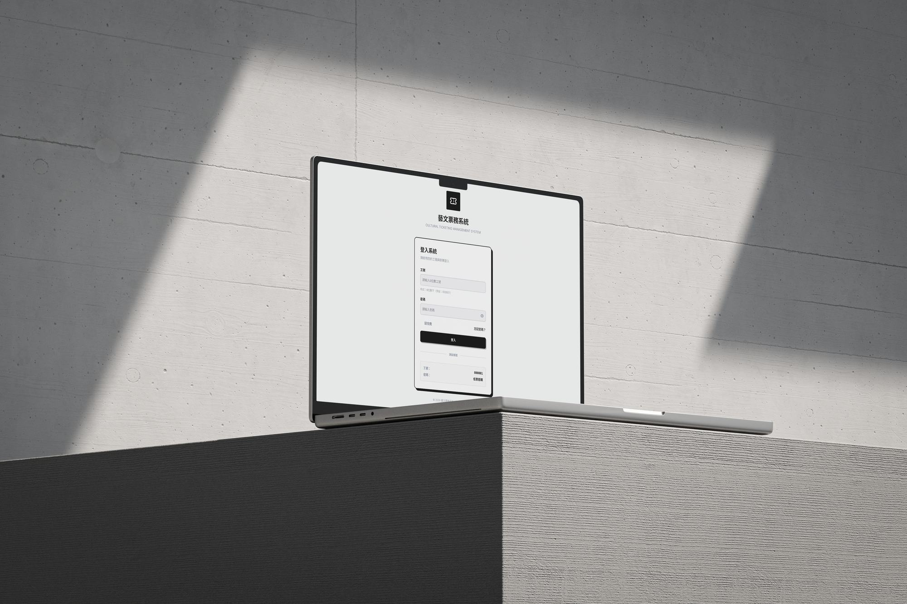
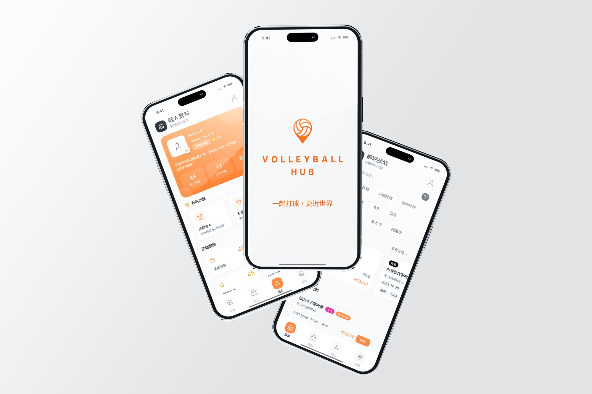
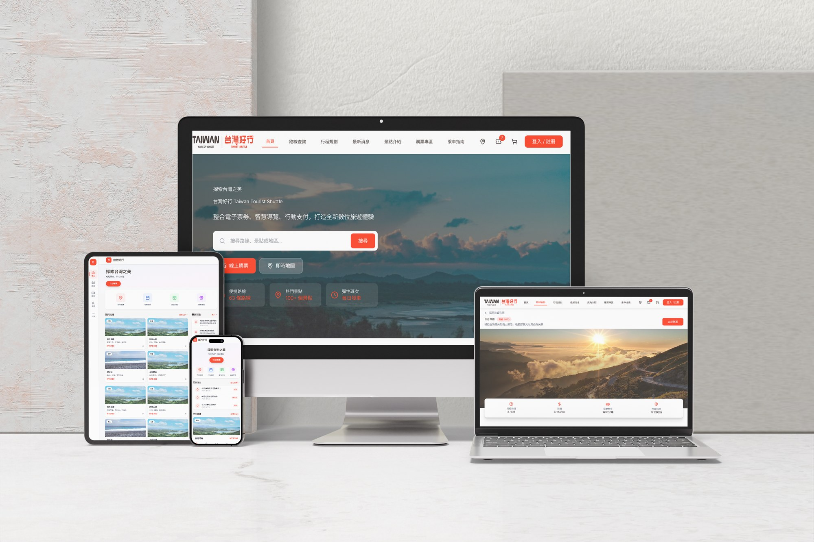

精選作品
涵蓋複雜後台系統、行動端體驗設計與公共服務網站的三個完整案例研究。

藝文票務管理後台
降低高風險操作中的誤觸與查找成本
透過資訊分層、清楚的操作狀態與二次確認，降低高風險操作中的不確定性。
貢獻 研究、資訊架構、User Flow、UI、Design System

Volleyball Hub
讓球友快速判斷場次是否適合自己
整合地點、時間、程度與名額資訊，降低使用者在社群訊息中反覆查找與確認的成本。
貢獻 Research、User Flow、Information Architecture、Prototype、UI

台灣好行 RWD
縮短旅客查找路線、時刻與票價的路徑
重整公共交通旅遊網站的資訊架構，依不同裝置調整內容優先順序，而不是只做比例縮放。
貢獻 Information Architecture、RWD、UI、Accessibility、Prototype
從行政流程到產品設計
在投入 UI/UX 設計之前，我有 5 年行政流程管理與跨部門協作經驗。這段經歷讓我熟悉資訊不完整、權責複雜、時間有限，但使用者仍必須完成任務的真實情境。
美術背景訓練我對構圖、色彩、比例與留白的敏感度；排球教練經驗則讓我習慣觀察不同使用者的理解方式與決策節奏。
流程設計失敗時，承擔成本的不是介面，而是真正需要完成任務的人。深入了解我的背景 →
複雜流程
將多步驟與高風險操作拆解為可理解的狀態、順序與確認機制。
資訊架構
整理分散資訊，建立清楚層級、分類與跨裝置內容優先順序。
設計系統與一致性
以色彩、字級、間距、元件與互動狀態維持產品體驗一致。
Frame
ChatGPT 模擬使用情境，整理需求、痛點與例外狀態。
Prototype
Figma 與 Figma Make 快速建立介面與互動原型，驗證資訊層級與操作流程。
Build
Claude Code／Codex 協助前端實作、RWD、雙語、深色模式與除錯。
Review
由設計者重新檢查需求、可及性、程式結果與內容真實性。
AI 用於加速整理、推演與實作，不取代真實使用者研究、設計判斷與最終驗證。